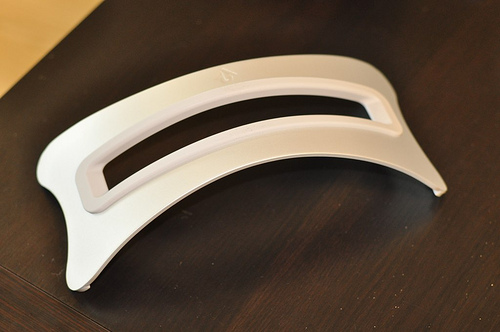

Fade In Fade Out Effect with Autoscroll
Reference1: http://jsfiddle.net/S4SmM/5/
Reference2: http://stackoverflow.com/questions/14003964/simple-jquery-slideshow-with-fadein-fadeout
image1
image2

image3